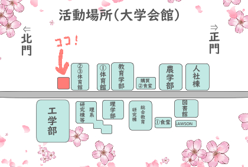

考古学研究部とは
考古学研究部は新潟大学学友会に所属している公認サークルです。
主に五十嵐キャンパス大学会館にて毎週水曜日17時から19時に活動を行っています。
普段は新大祭にむけて土器を作成したり、ジオラマによる遺跡の再現、遺物の再現などをしつつまったりとおしゃべりをしています。
休日にはみんなで博物館や遺跡に出かけることもあります。
考古学について興味のある部員も、全くわからない部員も、考古学を専攻する部員もみんな一緒に活動できる、そんな部活です。
活動日時、活動場所
毎週水曜日17-19時
大学会館
